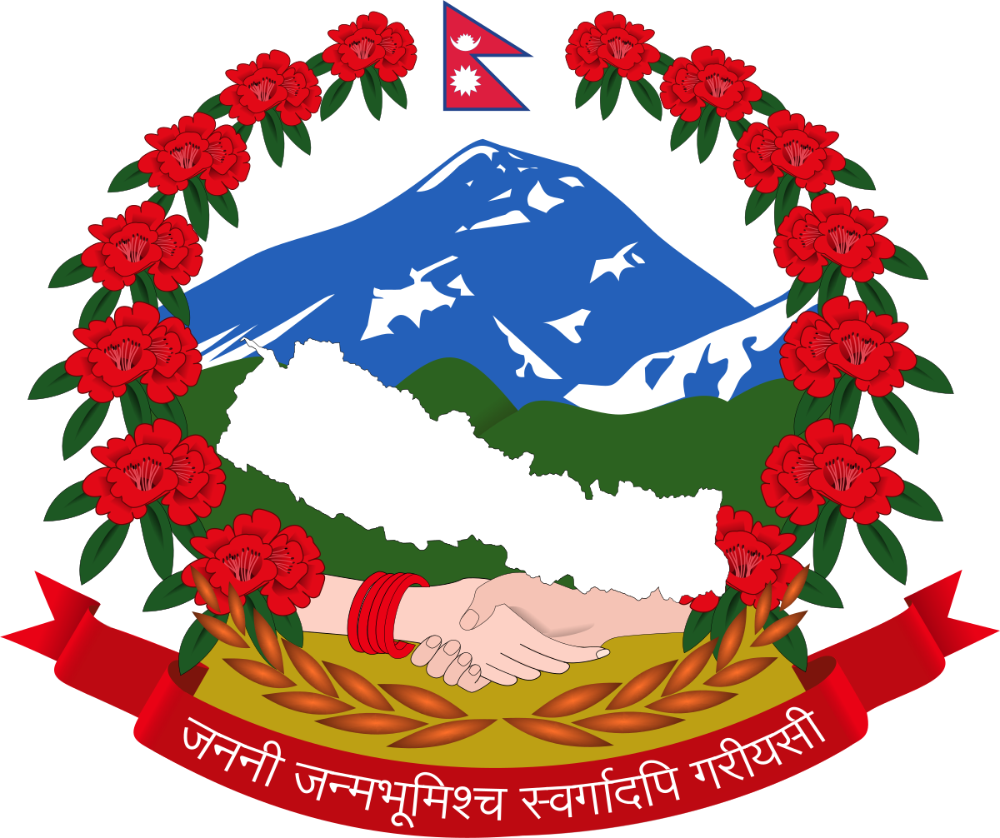
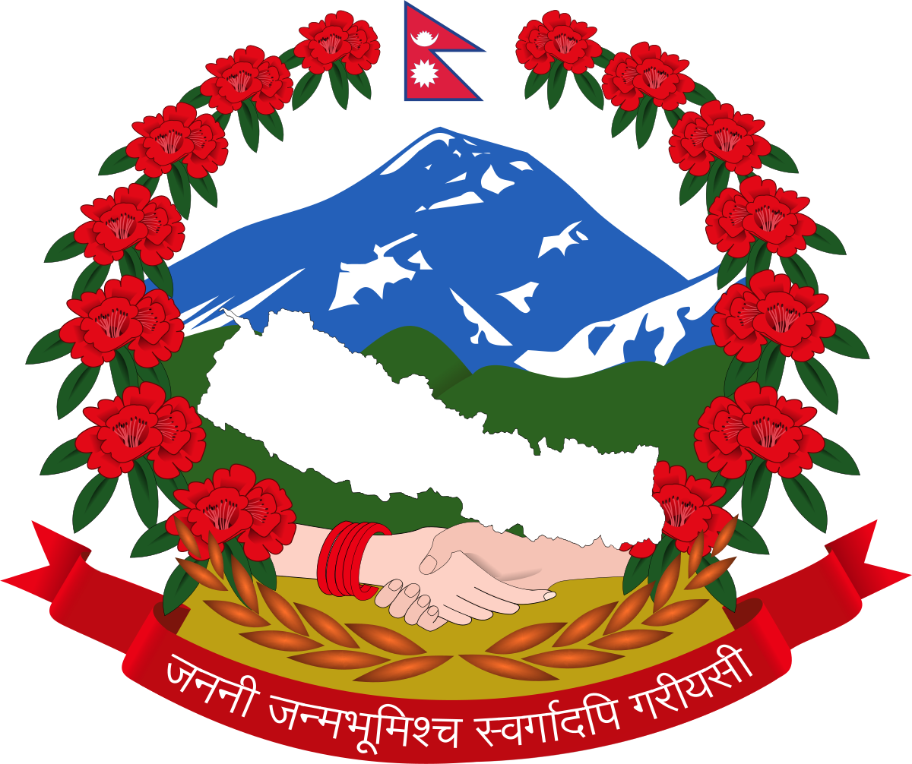
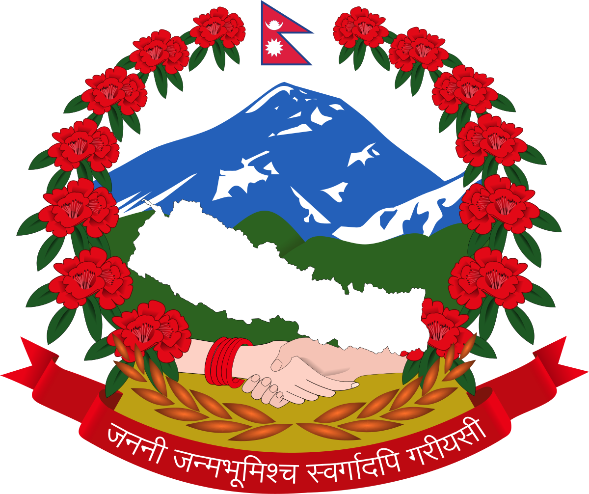
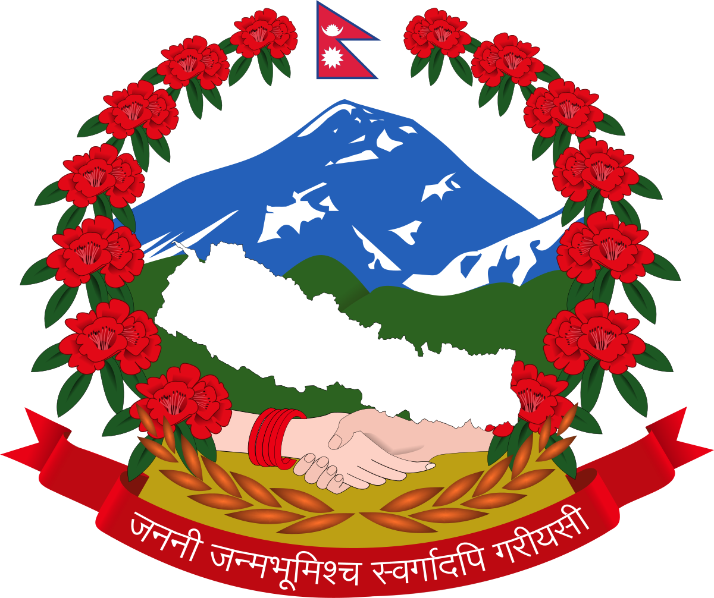

For a country of its size, Nepal has tremendous geographic diversity. It rises from as low as 59 metres (194 ft) elevation in the tropical Terai—the northern rim of the Gangetic Plain, through beyond the perpetual snow line to 90 peaks over 7,000 metres (22,966 ft) including Earth's highest (8,848-metre (29,029 ft) Mount Everest or Sagarmatha).Forming south-to-north transects, Nepal can be divided into three belts:
fdgdfgdfgsadsdf